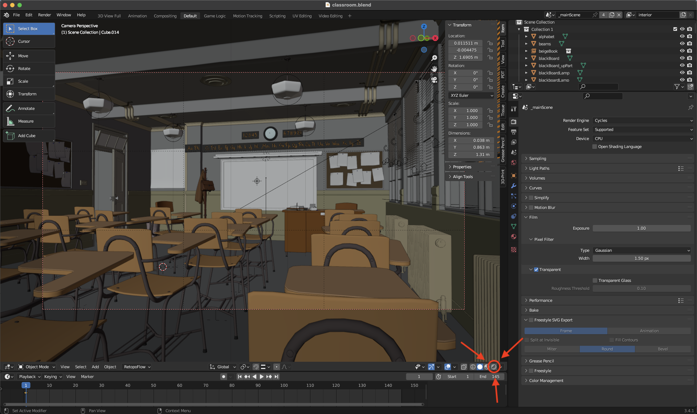
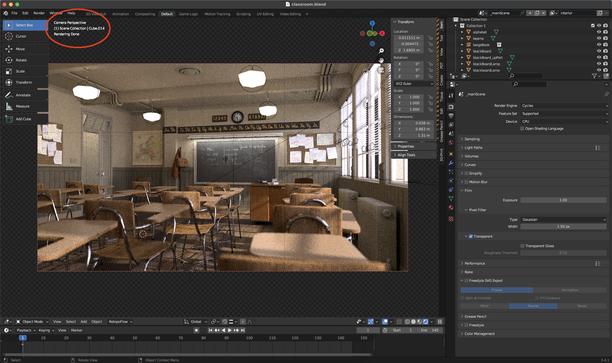

Introduction to Blender
Instructor-Led
We will follow a lecture format with live demonstrations. I strongly encourage you to participate actively by replicating each demo as it is presented. This hands-on approach, akin to experiential learning, enriches your learning experience and empowers you with practical skills through direct engagement.
Because we need to cover a substantial array of concepts within our three-hour timeframe, reviewing the notes thoroughly before the next hands-on session is highly advisable. This review will strengthen your grasp of the material and better prepare you for active participation in the upcoming session.
Feel free to ask questions at the end of each section. If you need clarification or further information on any topic discussed, don’t hesitate to speak up.
Hardware Requirements
Blender Foundation recommendations
Blender does have some special hardware requirements that may not be satisfied by the average computer. Blender.org lists the minimum hardware requirements as follows:
- 64-bit quad core CPU with SSE2 support.
- 8 GB RAM.
- Full HD display.
- Mouse, trackpad or pen+tablet.
- Graphics card with 2 GB RAM, OpenGL 4.3.
- Less than 10 year old.
Please note that these are the minimum system requirements. If you are planning on using this software to create more advanced projects, it is best to look at what Blender artists recommend.
Additional Notes:
Graphics
It is best to have a Dedicated Graphics Card for using 3D software like Blender. 3D modeling and rendering typically utilizes large amounts of virtual memory. Dedicated graphics cards have additional virtual memory for this purpose. Some integrated graphics systems in laptops and mini computers work for light projects as well. It is best to do a bit of personal research into the matter.
Most cards over the past decade will be just fine so long as you're packing at least 2GB of video memory on the Nvidia GeForce 400 series, AMD's Radeon HD 7000 range, or newer. CPU-wise, you're looking at a quad-core processor to get the program running.
If this information is making your head spin, then the demo scene stress test should at least confirm that your computer will work for this course.
Mouse
I urge you to use a dedicated mouse with a mechanical clickable centrewheel. The clickable centrewheel will be used often for panning and rotation of the 3D scene. Most mid-grade dedicated mice include this feature.
Until you are familiar with the interface, please do note use:
- A trackpad
- A touch-based mouse eg. Apple Magic Mouse
- A digitizer tablet eg. Wacom
If you in need of a different mouse, here are a few low cost recommendations that are easy to find online or pick up at staples. Note: both of these mice do not have bluetooth and require a USB A port for the wireless receiver.
Microsoft 2.5 ghz wireless 1850 mouse on Amazon Canada
Logitech 2.5 ghz wireless M325 mouse on Amazon Canada
Display
Blender has a rather large and complex user interface with many small buttons and windows. It is best to use a large, high resolution monitor in order to maximize the UI spread. Otherwise, buttons may be hidden or minimized, causing some confusion for the uninitiated.
Install & Test
A) Overview
Downloading and installing Blender is normally a straightforward process. However, if you have never tested the software on your particular computer hardware it is best to download, install and open a demo file for quick testing. Furthermore, I would like to ensure we are all using a similar installation with default settings and layout.
B) Recommended Blender version
Blender is under constant development meaning there are small incremental releases happening weekly. Implementing small changes on a constant basis can cause instability or bugs to the end user. I recommend downloading a Long Term Release version as these versions are intended for studios that favor reliability over new features. The latest (LTS) release version is version 4.2
Direct Link to 4.2 LTS release download
C) Running a demo file
Once you have Blender installed, it is best to open a demo scene to check for crashing or other bugs. There is a page hosted by the organization that allows anyone to download open sourced demo scenes.
1. Download demo scene
This course will not be taxing on your system as we are using basic features. I recommend downloading the 'Classroom Scene' created by Christophe Seux. Here is a direct link to downloading the file.
2. Open demo scene
Once you have downloaded the demo file, unzip it and open the classroom.blend file. Upon first opening the file you should see this:
3. Enable 'Viewport Shading'
In order to test the capability of your computer for rendering click this button circled in red:

Once you have clicked the 'Viewport shading button' as indicated by the red circle, patiently wait for the scene to load. The time to load varies depending on what computer you are using. I would suggest leaving this process for 1-10 mins.
4. Confirm the demo scene has rendered correctly
The scene should render within that suggested timeframe and look like this. Note: there is text in the upper left corner that indicates the loading, rendering and completion of the scene as indicated here.

If your scene looks like this screenshot then you have successfully stress tested your machine and are ready to take on this course. By completing this stress test we can now deduce that:
- Your Blender 3.3.3 installation was successful.
- You have opened your first Blender file.
- Your machine is capable of rendering [Raytraced.](https://en.wikipedia.org/wiki/Ray_tracing_(graphics)"Wikipedia Page for Raytracing Graphics") light successfully.
- You are ready to begin the course!
Basic Shortcuts
A short list of heavily used keyboard shortcuts baked into Blender by default.
Object Mode Shortcuts
| Description | Mac Modifier Key | Windows Modifier Key | Linux Modifier Key | Key #1 | Key #2 | ||
|---|---|---|---|---|---|---|---|
| Select All | Command (⌘) | Control (Ctrl) | Control (Ctrl) | + | A | X | X |
| Multi Select | SHIFT | SHIFT | SHIFT | + | LMB | X | X |
| Cut | Command (⌘) | Control (Ctrl) | Control (Ctrl) | + | X | X | X |
| Copy | Command (⌘) | Control (Ctrl) | Control (Ctrl) | + | C | X | X |
| Paste | Command (⌘) | Control (Ctrl) | Control (Ctrl) | + | S | X | X |
| Copy + Properties | Command (⌘) | Control (Ctrl) | Control (Ctrl) | + | Alt | + | C |
| Paste + Properties | Command (⌘) | Control (Ctrl) | Control (Ctrl) | + | Alt | + | V |
| Delete | X | X | X | X | X | X | X |
| Sidebar Collapse/Show | X | X | X | X | N | X | X |
| Contextual Pie Menu | X | X | X | X | ~ | X | X |
| Object/Edit Mode | X | X | X | X | TAB | X | X |
| Grab | X | X | X | X | G | X | X |
| Free Move Along X Axis | X | X | X | X | G | + | X |
| Free Move Along Y Axis | X | X | X | X | G | + | Y |
| Free Move Along Z Axis | X | X | X | X | G | + | Z |
| Rotate | X | X | X | X | R | ||
| Rotate Around X Axis | X | X | X | X | R | + | X |
| Rotate Around Y Axis | X | X | X | X | R | + | Y |
| Rotate Around Z Axis | X | X | X | X | R | + | Z |
| Hide | X | X | X | X | H | ||
| ISOLATE | X | X | X | X | SHIFT | + | H |
| UNHIDE ALL | X | X | X | X | ALT | + | H |
| Confirm Operation | RETURN | ENTER | ENTER | X | X | X | X |
| Cancel Operation | ESC | ESC | ESC | X | X | X | X |
| Add Item to Scene | SHIFT | SHIFT | SHIFT | + | A | X | X |
Unit #1
This first unit will introduce:
- The History & Philosophy of Blender 3D
- Fundamental 3D graphics concepts
- Broad overview of the interface
- Working modes
History of Blender
- Ton Roosendaal LINK to Wikipedia
Ton Roosendaal is a Dutch software developer and entrepreneur. He founded the Blender Foundation and developed Blender, a popular open-source 3D graphics software. Born on March 20, 1960, in Eindhoven, Netherlands, Roosendaal began his career as a digital artist and programmer. In 1998, he established Not a Number Technologies (NaN), the company behind Blender.
- Brief History LINK to Blender.org/History
Blender 3D was initially a commercial software developed by Ton Roosendaal's company, Not a Number Technologies (NaN), in the late 1990s. However, when NaN went bankrupt in 2002, Roosendaal made Blender open-source. He founded the Blender Foundation to oversee the project and used crowdfunding and sponsorships for its support. Blender's transition to open-source led to its widespread use in 3D modeling, animation, and visual effects, with a global community of users and contributors.
- Port to Linux LINK to Wikipedia
Blender was ported to Linux in the early 2000s as part of the open-source development process, which involved adapting its code to Linux's libraries and system calls. Blender was tested on various distributions and hardware configurations to address any issues, and it is now available on Linux, macOS, and Windows. The Linux version of Blender is popular among artists, designers, and developers who prefer open-source software and value the flexibility of Linux.
Free & Open Source Software (F.O.S.S)
- Transparency LINK to Git Repository
Transparency in open source software refers to the practice of freely sharing the source code, enabling users to access, review, and modify it. It promotes collaboration and innovation, as developers can contribute to existing projects and improve them. The transparency fosters a community-driven approach, allowing for continuous improvement and evolution.
- Unexpected outcomes Link to Mars Rover Project
A controllable Rover web-app, Experience Curiosity, to simulated space exploration of Exoplanets, to mobile-based Augmented Reality.
Brian Kumanchik, Project Lead & Art Director of NASA Jet Propulsion Laboratory implemented Blender into the workflow of JPL because it has a mature WebGL engine for interactive 3D browswer experiences.
- Unexpected outcomes Environmental Analysis Tool
Background The VI-Suite is a free and open-source addon for the 3D content creation application Blender, developed primarily as a tool for the contextual and performative analysis of buildings. Its functionality has grown from simple, static lighting analysis to fully parametric lighting, shadowing, and building energy analyses.
-
Communication Link to Blender Official YT Channel
-
The licensing allows for
- The freedom to use the software for any purpose
- The freedom to access and examine the source code
- The freedom to modify the software and distribute modifications
- The freedom to distribute copies of the software to others
Together, these four freedoms give users and developers the ability to understand, modify, and distribute open source software without any limitations, promoting transparency, collaboration, and innovation in the software industry.
3D Graphics concepts
- Graphical Advantage
Polygon modeling offers several efficiencies over other forms of 3D graphics, such as NURBS and sculpting. Here are some advantages of polygon modeling:
-
Flexibility: Polygon modeling allows for great flexibility in terms of creating different shapes and structures. It is easier to create complex geometric shapes with polygon modeling than with other techniques, and it is also easier to make changes to the model if needed.
-
Real-time rendering: Polygon models are usually lightweight and easy to render in real-time, making them ideal for use in video games, virtual reality, and other real-time applications.
-
Texturing: Polygon models are easy to texture and UV map, making them ideal for creating detailed and realistic models for film and gaming.
-
Animation: Polygon models are easy to animate, and can be rigged and posed in a variety of ways, making them ideal for creating animated characters and objects.
-
Efficiency: Polygon modeling is a relatively fast and efficient way of creating 3D models, making it a popular choice for many industries. It requires less processing power than other techniques, making it more accessible to a wider range of users.
- Polygon Mesh LINK to Wikipedia
Polygon modeling is a 3D computer graphics technique that uses interconnected flat polygons to define the shape of complex models. It offers flexibility and control, allowing for highly detailed and realistic designs with low processing requirements.
- Normals LINK to Wikipedia
Polygon normals are vectors that determine the orientation of a polygon in 3D space. They point outward from the polygon's surface and are calculated by taking the cross product of two edges. In computer graphics, polygon normals influence how light interacts with a model, affecting its shading, reflections, and specular highlights. They also determine the direction of surface-based effects.
- Shaders LINK to Wikipedia
Shaders are programs used in 3D computer graphics to control the appearance of surfaces and objects. They are written in a special programming language that allows them to manipulate the color, texture, and lighting of 3D models. Shaders are used to create a variety of visual effects, such as realistic lighting and shadows, reflections, and transparency. They can also be used to create special effects such as distortion, motion blur, and heat shimmer.
- Texture Mapping LINK to Wikipedia
Texture mapping is a technique used in 3D computer graphics to apply a 2D image or texture onto a 3D model's surface. It involves mapping each point on the surface of the model to a corresponding point on the 2D texture, using UV coordinates. Texture mapping is used to add detail and realism to 3D models, by applying textures such as wood, metal, or fabric. The texture can be manipulated and adjusted to fit the model's surface precisely.
- UV Mapping LINK to Wikipedia
UV texture coordinates are a 2D coordinate system used to map a 2D image or texture onto a 3D model in 3D computer graphics. The letters "U" and "V" refer to the two dimensions of the coordinate system, which are perpendicular to each other and represent the horizontal and vertical axes of the texture image. The UV coordinates are assigned to each vertex of the 3D model, which allows the texture to be mapped onto the surface of the model in a precise and accurate way.
- Types of Maps LINK to Wikipedia
There are several types of texture maps used in 3D computer graphics. Here are some of the most common types:
-
Diffuse map: This is the most basic type of texture map, and it defines the color and appearance of the surface of the 3D model.
-
Normal map: This type of texture map is used to add detail and depth to a 3D model's surface by simulating the appearance of bumps and creases.
-
Specular map: This type of texture map defines the reflective properties of a surface, determining how light interacts with the surface and creating the appearance of shiny or glossy materials.
-
Ambient occlusion map: This type of texture map is used to add depth and realism to a 3D model by simulating the way light is absorbed and scattered by surfaces in the environment.
-
Displacement map: This type of texture map is used to add highly detailed geometry to a 3D model's surface by creating the appearance of height and depth.
-
Emissive map: This type of texture map is used to add the appearance of self-illumination or glowing parts to a 3D model.
These are just a few examples of the types of texture maps used in 3D computer graphics. Different types of texture maps can be combined and used together to create highly detailed and realistic 3D models.
- RayTracing LINK to Wikipedia
Ray tracing is a rendering technique that simulates the behavior of light as it interacts with objects in a scene. It works by tracing the path of light rays as they travel from a virtual camera through the scene and interact with objects, determining how the light is reflected and refracted by each object.
Interface Overview
- Splash Screen LINK to Page
The splash screen is a graphical image or animation that is displayed when an application or software program is launched.
- Workspaces LINK to image
{kind=link}
A Blender workspace is a customized layout of windows and panels within the Blender interface that is designed to suit a particular workflow or task.
- Workspace Layout LINK to image
Workspaces are used to organize the various tools and features of Blender in a way that is most efficient and productive for the user. Each workspace can be customized to include different windows and panels, and can be saved and loaded for future use.
- Top Bar LINK to image
{kind=link}
The top bar in the Blender workspace is a horizontal bar located at the top of the interface, above the 3D viewport. It contains several menus and options that provide access to various features and settings in Blender. The top bar includes menus for file management, editing modes, object selection, view options, and rendering settings. It also includes buttons for adding objects, toggling between different modes, and accessing the preferences and add-ons. The top bar is a central location for many of Blender's most commonly used features and can be customized to include additional options or add-ons.
- Status bar LINK to Page
The status bar in Blender is a narrow horizontal panel located at the bottom of the interface, below the 3D viewport. It provides information about the current state of the program and the active tool or feature. The status bar displays important information such as the current mode, selected object or component, the number of vertices, edges, and faces in the active mesh, and the current frame number for animation playback. It also displays status messages and warnings, and provides access to various system settings and preferences. The status bar is a helpful tool for monitoring the progress of operations and keeping track of important information while working in Blender.
- Tool Bar LINK to Page
(Hide & Reveal with 'T')
Located on the left-hand side of the Blender interface, the Blender Toolbar is a comprehensive collection of tools and functionalities. It offers quick access to a wide range of options for modeling, sculpting, texturing, animating, rendering, and more.
- Outliner LINK to Page
The Blender Outliner is a hierarchical list view that provides a visual representation and organizational structure of the objects, collections, and data within a Blender scene.
- Panels LINK to Page
Tabs in the Blender UI refer to the horizontal tabs at the top of the interface that allow users to switch between different editor types and workspaces, providing a flexible and customizable layout.
Panels in the Blender UI are vertical sections within editors that contain various settings, options, and tools related to specific functions, allowing users to access and modify specific aspects of their projects efficiently.
- Modes Demonstration
Blender modes are different editing contexts within the software that enable users to perform specific actions and manipulate objects, such as object mode for overall scene editing, edit mode for vertex-level modifications, and sculpt mode for more organic and detailed sculpting.
Viewport Navigation
Viewport navigation in Blender refers to the methods and controls used to navigate and explore the 3D Viewport, which is the main window where users interact with their 3D scenes.
-
Orbit: To orbit the view around the scene, hold down the middle mouse button and drag the mouse in the desired direction. Alternatively, you can press and hold Shift and the middle mouse button, then drag.
-
Pan: To pan the view horizontally or vertically, hold down Shift and the middle mouse button, then drag the mouse.
-
Zoom: To zoom in or out, scroll the middle mouse button up or down. Alternatively, you can use the "+" and "-" keys on the keyboard to zoom in and out, respectively.
-
Pan Shift + CMB (Centre Mouse Button)
-
Zoom Scroll Wheel
-
Zoom to Section Select item > View menu > Zoom to selection
-
Rotate CMB and move
Select & Transform
- Selection LMB (Left Mouse Button)
- Multi Selection SHIFT + LMB (Left Mouse Button)
- Grab / Move Select item > View menu > Zoom to selection
- Rotate Hold CMB (Centre Mouse Button) and move mouse
- Scale S
- Axis locking X, Y, Z
- 3D Curser Shift + RMB (Right Mouse Button)
Sidebar Menu
- Hide Show Sidebar N or Click Tab
- Item Menu Demonstration
- Tool Menu Demonstration
- View Menu Demonstration
Tool Bar
- Hide Show Tool BarT or Click Tab
- About [LINK to Page](https://docs.blender.org/manual/en/latest/interface/tool_system.html#ui-region-toolbar “Manual”)
- Selection Tool Demonstration
- View Menu Demonstration
- Move Demonstration
- Rotate Demonstration
- Scale Demonstration
- Transform Demonstration
- Annotate Demonstration
- Measure Demonstration
- Add Primitive Demonstration
Adding & Removing Objects
In Blender, adding items is done by utilizing specific shortcuts to quickly create objects or elements within the scene, such as Shift + A to bring up the Add menu and choose from a variety of primitives or Shift + A, followed by M, to add a new material.
On the other hand, deleting items is typically done by selecting the desired object or element and pressing the Delete key or X key, which brings up a menu with options to delete the selected item, vertices, edges, or faces, depending on the active mode (Edit mode, Vertex mode, etc.). Additionally, using the shortcut Shift + X allows for deleting only the selected vertices, edges, or faces without deleting the entire object.
- Adding items to scene SHIFT + A
- Deleting X
- Context Menu Demonstration
Outliner
The Blender Outliner is a powerful tool for managing objects, collections, and data within a scene. It provides an organized hierarchical view of the elements in the scene and allows for efficient selection, organization, and management.
Associated shortcuts for using the Outliner include:
-
Hiding/Showing Pressing H to hide selected items or Alt + H to unhide all hidden items.
-
Selecting/Deselecting Clicking on an item in the Outliner selects it, and Shift + Clicking allows for selecting multiple items. Pressing A selects or deselects all items.
-
Parenting Dragging an item onto another in the Outliner establishes a parent-child relationship.
-
Renaming Pressing F2 or double-clicking on an item's name allows for renaming it.
-
Deleting Pressing X or Delete removes the selected item(s) from the scene.
-
Collection Operations Right-clicking on a collection in the Outliner brings up a context menu with various collection-related operations, such as creating, linking, or* unlinking collections.
-
Adding scene items SHIFT + A
-
Selecting multiple items Shift + LMB
-
Creating a collection M
-
Selecting collection Demonstration
-
Intro LINK to Manual
Areas & Windows
In Blender, areas and windows refer to the various panels and regions within the user interface where different editors and tools are displayed, providing a flexible workspace for working on different aspects of a project simultaneously.
Associated shortcuts for managing areas and windows in Blender include:
-
Splitting Areas: To split an area into two, position the mouse cursor over the border between two areas and press the left mouse button. Alternatively, use the shortcut Ctrl + Alt + Q to split the active area vertically or Ctrl + Alt + W to split it horizontally.
-
Joining Areas: To join two areas into one, position the mouse cursor over the border between them, press Ctrl + Alt + J, and click with the left mouse button.
-
Switching Editor Types: To switch the active editor type within an area, use the shortcut Ctrl + Left/Right Arrow keys or Ctrl + Up/Down Arrow keys.
-
Maximizing an Area: To maximize the active area, press Ctrl + Up Arrow or Ctrl + Down Arrow.
-
Toggling Full Screen: Pressing Shift + Spacebar toggles the current area into full-screen mode.
-
Zooming in/out: Use the middle mouse button scroll or the '+' and '-' keys to zoom in and out within an area.
-
Intro LINK to Manual
-
Resizing RMB on edge / Demonstration
-
Splitting RMB on edge / Demonstration
-
Joining RMB on edge / Demonstration
-
Open Window Demonstration
Editor Types
Edit Mode
The 1, 2, and 3 keyboard commands in Blender are used to quickly access different selection modes within Edit mode in the 3D Viewport editor. These shortcuts allow users to switch between selecting vertices, edges, and faces with ease.
1: Vertex Selection Mode
Pressing the 1 key enters Vertex selection mode in Edit mode. This allows users to select individual vertices of a mesh for editing or manipulation.
2: Edge Selection Mode
Pressing the 2 key activates Edge selection mode. In this mode, users can select edges of the mesh, which can be useful for tasks such as edge extrusion or creating sharp edges.
3: Face Selection Mode
Pressing the 3 key switches to Face selection mode. This mode enables users to select entire faces of the mesh, which is particularly handy for tasks like extruding or modifying large surface areas.
Edit mode in Blender is a specific mode within the 3D Viewport editor that allows users to modify the geometry of selected objects at the vertex, edge, or face level. It provides a range of tools and shortcuts for precise editing and manipulation of the mesh.
Here are some associated shortcuts commonly used in Edit mode:
Selection:
- Right-click: Selects a vertex, edge, or face under the cursor.
B: Activates box selection, allowing users to drag a selection box to select multiple vertices, edges, or faces.C: Enables circle selection, where users can select vertices, edges, or faces within a circular area.Ctrl + Left-click: Adds or removes vertices, edges, or faces from the selection.Ctrl + L: Selects all connected vertices, edges, or faces to the currently selected element.
Transformation:
G: Translates (moves) selected vertices, edges, or faces.R: Rotates selected vertices, edges, or faces.S: Scales selected vertices, edges, or faces.Alt + G: Resets the translation (moves) of selected vertices, edges, or faces.Alt + R: Resets the rotation of selected vertices, edges, or faces.Alt + S: Resets the scale of selected vertices, edges, or faces.
Mesh Editing:
E: Extrudes selected vertices, edges, or faces to create new geometry.F: Creates an edge or face between selected vertices or edges.Ctrl + R: Activates the Loop Cut tool, allowing users to create new edge loops.Ctrl + B: Enables the Bevel tool, which creates beveled edges or faces.
Vertex/Edge/Face Operations:
Ctrl + V: Opens the Vertex context menu with various vertex-related operations.Ctrl + E: Opens the Edge context menu with various edge-related operations.Ctrl + F: Opens the Face context menu with various face-related operations.
Edit Mode Toolbar
The Editor Toolbar in Blender is a set of tools and options available within each editor window. It provides quick access to commonly used functions and settings specific to the active editor, enhancing productivity and workflow efficiency.
The Editor Toolbar typically appears at the top of the editor window and contains various icons, buttons, menus, and dropdowns. The specific tools and options present in the toolbar depend on the type of editor currently active.
For example, in the 3D Viewport editor, the toolbar may include tools for object manipulation (such as selection, transformation, and duplication), options for shading and display modes, rendering settings, and viewport navigation controls.
In the UV/Image Editor, the toolbar may offer tools for UV mapping, texture painting, image manipulation, and adjustment settings.
The Properties Editor has its own toolbar that displays options related to the selected object or scene properties, materials, textures, and more.
Similarly, other editor types in Blender have their respective toolbars tailored to the specific functionalities and tasks associated with them.
The Editor Toolbar serves as a convenient and easily accessible interface for performing actions and adjusting settings within the active editor. It allows users to efficiently navigate, manipulate, and customize their workflow, ensuring a smooth and intuitive experience in Blender.
- Editor Toolbar LINK to Manual
Homework (If possible)
Please take a moment to scroll back through this page and review each section, testing the techniques mentioned along the way. Additionally, Session #2 is available for your review if you are interested in previewing what we will be building next week. Feel free to explore and familiarize yourself with the upcoming content.
Session #2
Hands on workshop
In this session we will be:
- Working with Mesh Primatives
- Modifying Mesh Coordinates
- Working with Scale Units
- Scaling Mesh Edges and Faces
- Cutting, Extruding, and Seperating Meshes
- Applying Modifiers
- Organizing our Scene
- Creating basic Materials
- Applying our Materials
- Inserting and setting up our Camera
- Lighting our Scene
- Rendering an Output
Creation of a cylinder primitive
- Press Shift + A to open the Add menu.
- In the Add menu, hover the cursor over "Mesh" to open the mesh options.
- Press C to access the "Cylinder" option.
- By default, Blender creates the cylinder at the origin (0, 0, 0) with a radius of 1 and a height of 2 units.
Flaring cylinder end(s)
- With the cylinder selected, navigate to the top menu bar and click on the "Edit" menu or by pressing "Tab".
- Press "3" this will activate face select mode.
- Now, click on one of the faces at the end of the cylinder that you want to enlarge. This will select the face.
- To enlarge the selected face, press the S keyboard shortcut for scale.
- Move the mouse cursor away from the face to start enlarging it. As you move the mouse further away, the face will increase in size.
- Once you are satisfied with the size of the face, left-click to confirm the transformation.
- Exit Edit mode by pressing Tab, this will bring you back to default object mode.
Positioning Offset from Centerline
Using Sidebar Menu > Item > Transform Properties
- Select the object you want to manipulate by clicking on it in the 3D viewport.
- Locate the sidebar menu on the right-hand side of the Blender interface. If it's not visible, you can toggle it on and off by pressing the N key.
- In the sidebar, find the "Item" tab, which is represented by an icon with a cube shape.
- Within the "Item" tab, you will find various transformation options such as location, rotation, and scale.
- To change the position of the object, adjust the values under the "Location" section. You can enter specific numerical values or use the arrows to incrementally move the object * along the X, Y, and Z axes.
Or
By Using Grab (G)
- Select the object you want to move by clicking on it in the 3D viewport. You can also select multiple objects by holding down the Shift key and clicking on each object.
- Press the G key on your keyboard to activate the "Grab" or move tool. This allows you to move the selected object(s).
- Press the X key on your keyboard to constrain the movement to the X-axis.
- Now, you can use the mouse to move the object back and forth along the X-axis. Simply move the mouse in the desired direction.
- Alternatively, if you want to move the object on the Z-axis by a specific distance, you can type a numerical value on your keyboard. For example, if you want to move the object 2 units up on the X-axis, type "2" and then press Enter.
- Once you have positioned the object at the desired location on the Z-axis, left-click the mouse or press Enter to confirm the movement.
Adding Empty using for mirroring
- Make sure you are in Object Mode by selecting it from the mode selector dropdown at the top of the Blender interface.
- Right-click in the 3D viewport to ensure no object is selected. This step ensures that the new empty axis will be added as a separate object.
- Press the Shift + A keys on your keyboard. This brings up the Add menu.
- From the Add menu, select "Empty" under the "Mesh" section. You can use the mouse to navigate the menu or press the letter E on your keyboard to quickly jump to the "Empty" option.
- Once you select "Empty," a new empty axis object will be added to the scene at the location of the 3D cursor, which is represented as a small gray crosshair.
- To move the empty axis to a specific location, you can use the transformation tools. For example, you can press the G key to activate the "Grab" tool, then use the mouse to move the empty axis to the desired position.
- Additionally, you can modify the properties of the empty axis by selecting it in the 3D viewport and accessing its properties in the Object Properties panel.
Parenting an object to the Empty
- Select the object(s) that you want to parent to the empty axis. You can select multiple objects by holding down the Shift key while clicking on each object.
- Shift-select the empty axis object to make it the active object. The active object is the last object selected and will be the parent of the other selected objects.
- Press Ctrl + P on your keyboard to bring up the Parent menu.
- From the Parent menu, select "Object" to parent the selected objects to the empty axis.
- The selected objects will now be parented to the empty axis. You can verify this by moving or rotating the empty axis, and the child objects will follow along.
Applying subdivision surface modifier
- Select the object to which you want to apply the Subdivision Surface modifier.
- Make sure you are in Object Mode. You can switch to Object Mode by pressing the Tab key on your keyboard and selecting "Object Mode" from the mode selector in the bottom-left corner of the Blender interface.
- Press Ctrl+3 on your keyboard. This shortcut applies the Subdivision Surface modifier and sets the viewport subdivision level to 3. The object will now appear smoother and more subdivided.
Note: The Ctrl+3 shortcut is a quick way to set the subdivision level to 3, but you can also manually adjust the subdivision level in the modifier settings if desired.
Inseting, Extruding and Scaling faces
-
Enter Edit Mode by selecting the object and pressing the Tab key.
-
Select the face or faces you want to manipulate. You can use selection tools like right-clicking, box selection (B), or circle selection (C) to choose the desired faces.
-
To inset the selected faces, press the I key. You can control the inset depth by moving the mouse or inputting specific numerical values. Left-click or press Enter to confirm the inset.
-
To extrude the selected faces, press the E key. Move the mouse or enter numerical values to define the extrusion distance or direction. Left-click to confirm the extrusion.
-
To scale the selected faces, press the S key. Move the mouse to scale the faces interactively or input numerical values for precise scaling. Left-click to confirm the scaling.
-
You can also constrain the extrusion or scaling to a specific axis by pressing X, Y, or Z after initiating the extrusion or scaling operation. This constrains the operation to the corresponding axis.
-
After performing the desired transformations, you can further manipulate the geometry by translating, rotating, or scaling the newly created faces or vertices.
-
To exit Edit Mode, press the Tab key again.
Applying the objects scale
- Select the object you want to apply the scale to. You can select an object by right-clicking on it in the 3D Viewport.
- Make sure you are in Object Mode. You can switch to Object Mode by pressing the Tab key on your keyboard and selecting "Object Mode" from the mode selector in the bottom-left corner of the Blender interface.
- Go to the "Object" menu at the top of the Blender interface.
- From the "Object" menu, choose "Apply" and then select "Scale" from the submenu. Alternatively, you can use the shortcut Ctrl+A and then choose "Scale" from the options.
- After applying the scale, the object's scale will be set to 1, effectively resetting any scaling transformations that were previously applied to the object. The object's size will appear normalized based on its new scale.
Adding loop cuts
Select the cylinder object in Edit Mode. You can switch to Edit Mode by pressing the Tab key on your keyboard and selecting "Edit Mode" from the mode selector in the upper-left corner of the Blender interface. Or switch to edit mode using Tab.
Locate the area on the cylinder where you want to add the edge loop.
Using the regular method:
- Ensure you are in Edge Select mode. You can switch to Edge Select mode by pressing the 2 key on your keyboard or by selecting the "Edge Select" option from the selection mode dropdown in the header of the 3D Viewport.
- Right-click on one of the edges that surround the desired location for the edge loop to select it.
- With the edge selected, navigate to the Mesh menu at the top of the Blender interface and choose "Edge" -> "Edge Loop" -> "Slide" or simply press the Ctrl+R shortcut.
- Move your mouse to adjust the position of the edge loop and left-click to confirm its placement. You can also use the scroll wheel to add more edge loops.
- Left-click again or press Enter to finalize the edge loop.
Using shortcuts:
- Ensure you are in Edge Select mode.
- Select one of the edges surrounding the desired location.
- Press Ctrl+R to activate the Loop Cut tool.
- Move your mouse to adjust the position of the edge loop and left-click to confirm.
- Slide the edge loop to the desired location and left-click again to finalize.
Applying Bevels
- elect the cylinder object in Edit Mode (Tab).
- hoose the end faces you want to bevel using selection tools like right-clicking, box selection (B), or circle selection (C).
- o to the "Mesh" menu and select "Bevel" or "Bevel Faces".
- djust the bevel settings in the Bevel tool options.* Confirm the operation by left-clicking or pressing Enter.
Shortcut: Tab to switch to Edit Mode, B for box selection, C for circle selection.
Contiguous selections & Deselections
Contiguous Selections
- Enter Edit Mode (Tab).
- Activate the selection tool (such as right-clicking, box selection (B), or circle selection (C)).
- Click on the starting vertex, edge, or face you want to select.
- While holding down the Shift key, click on the ending vertex, edge, or face of the desired selection range.
- Blender will select all the vertices, edges, or faces between the starting and ending points.
Contiguous Deselections
- Enter Edit Mode (Tab).
- Activate the selection tool (such as right-clicking, box selection (B), or circle selection (C)).
- Click on the starting vertex, edge, or face you want to deselect.
- While holding down the Shift key, click on the ending vertex, edge, or face of the desired deselection range.
- Blender will deselect all the vertices, edges, or faces between the starting and ending points.
Duplicating and separating faces
Duplicating Faces
- Enter Edit Mode (Tab).
- Select the faces you want to duplicate using the selection tools like right-clicking, box selection (B), or circle selection (C).
- Press Shift + D to duplicate the selected faces.
- Move the duplicated faces to the desired location by translating, rotating, or scaling them.
- Left-click or press Enter to confirm the placement of the duplicated faces.
Separating Faces
- Enter Edit Mode (Tab).
- Select the faces you want to separate using the selection tools like right-clicking, box selection (B), or circle selection (C).
- Press P to open the Separate menu.
- Choose "Selection" from the Separate menu options to separate the selected faces into a new object.
- The separated faces will now be in a new object, while the original object retains the remaining faces.
Knife Tool - Cutting Through
- Before starting, make sure the camera is in a projected view that allows you to accurately visualize the cutting path.
- Enter Edit Mode (Tab).
- Press K to activate the Knife tool.
- Click on the starting point of the cut on the object.
- Move the mouse cursor along the desired cutting path.
- Left-click to create a cut.
- Continue creating additional cuts as needed by left-clicking at different points along the cutting path.
- To finish the cut, press Enter or right-click.
Isolation & Exit isolation
Isolation Mode
- Select the object or objects you want to isolate.
- Press the forward slash key (/) on the keyboard.
- Blender will enter isolation mode, hiding all other objects except for the selected ones.
Exiting Isolation Mode
- To exit isolation mode, press the forward slash key (/) again.
- Blender will return to the regular view, showing all objects in the scene.
Applying the solidify modifier
Duplicating and separating the cut faces to create the grip
Duplicating Faces
- Enter Edit Mode (Tab).
- Select the faces you want to duplicate using the selection tools like right-clicking, box selection (B), or circle selection (C).
- Press Shift + D to duplicate the selected faces.
- Move the duplicated faces to the desired location by translating, rotating, or scaling them.
- Left-click or press Enter to confirm the placement of the duplicated faces.
Separating Faces
- Enter Edit Mode (Tab).
- Select the faces you want to separate using the selection tools like right-clicking, box selection (B), or circle selection (C).
- Press P to open the Separate menu.
- Choose "Selection" from the Separate menu options to separate the selected faces into a new object.
- The separated faces will now be in a new object, while the original object retains the remaining faces.
Creating & Naming Materials
- Select the object or objects to which you want to assign a material by clicking on them in the 3D viewport.
- Go to the "Material" tab in the Properties panel (located in the sidebar on the right-hand side of the Blender interface, usually accessed by pressing the N key).
- If no material slots are available, click the "+" button next to the material list to add a new material slot for the selected object(s).
- With the material slot selected, click the "New" button to create a new material. By default, it will be named "Material".
- To rename the material, click on the material's name field (e.g., "Material") and enter a new name for the material. Press Enter to confirm the new name.
- Adjust the material's properties, such as its color, roughness, metallicness, or any other desired attributes, using the various options available in the material settings.
- If you want to assign the material to other objects, select the objects and click the material dropdown menu in the material slot. Choose the desired material name from the list.
Repeat the process to create and name additional materials as needed.
Naming materials is helpful for better organization and easy identification of materials when working on complex scenes with multiple objects. It allows you to assign different appearances, properties, and textures to specific materials, enhancing the overall visual quality of your work in Blender.
Applying Single & Multiple materials to a single objects
Applying a Single Material
-
With the material slot selected, click the "New" button to create a new material. By default, it will be named "Material".
-
Adjust the properties of the material, such as its color, roughness, or any other desired attributes, using the various options available in the material settings.
-
The single material is automatically assigned to the entire object.
Applying Multiple Materials
-
To apply multiple materials, click the "+" button next to the material list to add additional material slots for the selected object.
-
With a new material slot selected, click the "New" button to create a new material. By default, it will be named "Material.001". Repeat this step for each additional material you want to apply.
-
Adjust the properties of each material as desired.
-
In Edit Mode, select the faces or parts of the object to which you want to assign a specific material.
-
In the material slots, click the material dropdown menu for the selected faces or parts, and choose the desired material name from the list. Repeat this step for each material you want to assign to different parts of the object.
-
The selected faces or parts will now have the assigned material(s), and you can adjust the properties of each material individually to achieve different visual effects.
By applying single or multiple materials to a single object, you can create complex and visually appealing models with varied appearances for different parts or components of the object.
Scene setup & Management (Grouping & Naming)
Grouping Objects:
- Select the objects you want to group together. You can select multiple objects by holding down the Shift key while clicking on each object.
-
Press Ctrl + G to create a new group. A pop-up window will appear, allowing you to name the group. Enter a descriptive name for the group and press Enter to confirm.
-
The selected objects are now grouped together under the specified name.
Naming Objects:
-
Select an object by clicking on it in the 3D viewport.
-
In the "Object" tab of the Properties panel (located in the sidebar on the right-hand side of the Blender interface, usually accessed by pressing the N key), locate the "Object" section.
-
Find the "Name" field under the "Object" section and enter a meaningful name for the object.
-
Press Enter to confirm the new name.
-
Repeat this process for each object in your scene, giving them descriptive names to help organize and identify them easily.
Lighting setup
-
Open Blender and ensure you have a scene set up with objects.
-
In the 3D viewport, make sure you are in "Object Mode" by pressing the Tab key if necessary.
-
By default, Blender starts with a basic light source called "Lamp". You can adjust this light or add additional lights for more control and realism.
-
To add a new light, go to the "Add" menu at the top of the 3D viewport or use the Shift + A shortcut. Choose "Light" and select the type of light you want to add (e.g., "Point", "Sun", "Area", "Spot", etc.). The new light will be placed at the origin (0, 0, 0) in the scene.
-
Position the light source by selecting it and using the Move (shortcut: G) and Rotate (shortcut: R) tools to place it where you want. You can also adjust the light's properties in the "Light" tab of the Properties panel (located in the sidebar on the right-hand side of the Blender interface, usually accessed by pressing the N key).
-
Experiment with different types of lights and their properties to achieve the desired lighting setup. For example, a "Point" light emits light in all directions, while a "Sun" light mimics the sun's directional light.
You can also adjust the strength (intensity) of the light source in the "Light" tab or directly in the 3D viewport by selecting the light and adjusting the Strength value.
Camera setup
- Demonstration
Render settings (Passes, Denoising, Filetype)
- Demonstration
Render output
- Demonstration
{kind=link}